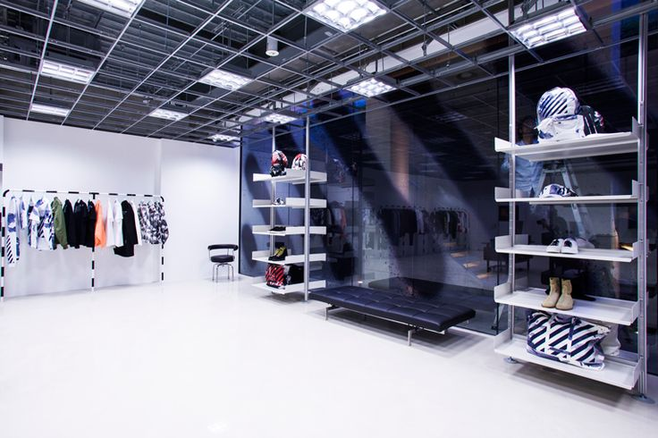
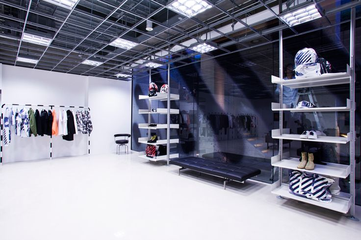

virgil abloh est un artiste, un DJ et un Designer,née en 1980 à Illinois. mort en 2021 à cause du cancer virgil était très présent dans la mode en tant que créateur de la marque off white il était aussi directeur artistique chez Louis vuitton.Virgil abloh a amené un style dans la mode en mélangeant habits de luxes et streetwear au début il faisait des études de technologie moderne.Virgil a toujours été créatif dès sa jeunesse il se lance en tant que DJ dans la musique.
durant sa vie Virgil a travaillé avec des rappeurs connus comme Kanye west en 2010 il était directeur de l'agence créative chez Donda plus tard en 2013 il créa sa marque OFF-White sa carrière était déja partie avant mais a partir de ce moment sa carrièrre a pris son envol en créant OFF-White avec sa marque il mélange streetwear,art,luxe,musique et voyage.seulement 1an après le lancement de sa marque en 2014 des models portent des habits OFF-White a la fashion week a Paris puis en 2016 il ouvre son premier magasin au japon et puis finalement il fit des collaborations avec des grandes marques comme nike,mercedes ,louis vuitton.

 
